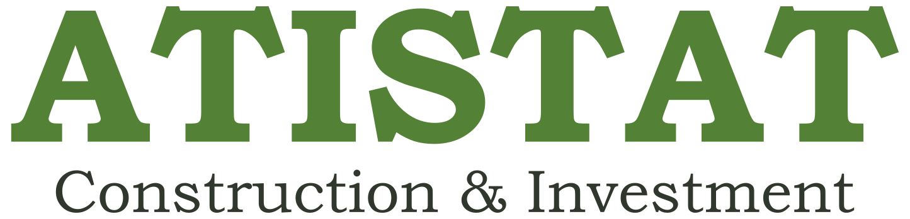

Примерен инвестиционен анализ
Двустаен близо до градски транспорт
Не е реална оферта Чака човешки преглед

Как да запазите PDF
Изберете „Печат / Save as PDF“, после изберете системната опция “Save as PDF”. Няма вграден генератор на PDF.
Задължителни предупреждения
- Офертата, входовете и резултатите са синтетични и ПРИМЕРНИ.
- Формулите и праговете са експериментални и неодобрени.
- Официалните агрегати не доказват цена или качество на имот.
- Отчетът не е инвестиционен, кредитен, правен, данъчен или оценителски съвет.
Синтетична оферта
offer-001 · Лозенец
| Класификация | synthetic · Не е реална оферта |
|---|---|
| Запис | offer-001-v1 |
| Цена | 168 000 EUR |
| Площ | 67 m² |
| Състояние | За частичен ремонт |
| Свежест | Фиксирана демонстрационна снимка · 31.07.2026 |
Допускания и придобиване
Начална стойност
| Компонент | Вход | Резултат EUR |
|---|---|---|
| Покупна цена | 168 000 EUR | 168 000 |
| Местен данък | 0,03 | 5 040 |
| Нотариални разходи | 1 100 EUR | 1 100 |
| Вписване | 168 EUR | 168 |
| Брокер | 0,024 | 4 032 |
| Банкови разходи | 900 EUR | 900 |
| Ремонт | 22 000 EUR | 22 000 |
| Общо | 201 240 EUR |
Ремонт
Примерен бюджет с резерв
| Подови настилки и боядисване | 7 200 EUR |
|---|---|
| Кухня и уреди | 8 600 EUR |
| Баня и инсталации | 4 200 EUR |
| Резерв | 2 000 EUR |
| Общо | 22 000 EUR |
Ограничение: количествата не са потвърдени с оглед или количествено-стойностна сметка.
Финансиране
Анюитетен пример
| Главница | 120 000 EUR |
|---|---|
| Годишна лихва | 2,40% |
| Срок | 240 месеца |
| Месечно плащане | 630,05 EUR |
| Статус | Демонстрация; не е банкова оферта или ГПР |
Парични потоци и показатели
Базов пример
| Период | Категория | Поток EUR |
|---|---|---|
| 0 | Собствен капитал | −91 740 |
| 1 | Ремонт | −11 000 |
| 2 | Ремонт | −11 000 |
| 3–5 | Държане и финансиране | −4 500 |
| 6 | Нетен изход след погасяване | +117 650 |
Сценарии
Песимистичен · базов · оптимистичен
| Сценарий | Продажна цена EUR | Ремонт EUR | Нетна печалба EUR | Основание |
|---|---|---|---|---|
| Песимистичен | 225 400 | 24 200 | 5 738 | По-ниска цена, преразход, по-дълго държане |
| Базов | 245 000 | 22 000 | 25 910 | Текущи демонстрационни допускания |
| Оптимистичен | 264 600 | 20 900 | 47 022 | По-висока цена, икономия, по-кратко държане |
Чувствителност
Изходна цена ±8%
| Промяна | Продажна цена EUR | Нетна печалба EUR | Изисква преглед |
|---|---|---|---|
| −8% | 225 400 | 6 898 | Да |
| 0% | 245 000 | 25 910 | Не |
| +8% | 264 600 | 44 922 | Не |
Риск и увереност
Прозрачни демонстрационни оценки
| Риск | 34 / 100 · среден | Данни 18 × 30%; Пазар 48 × 40%; Изпълнение 36 × 30% |
|---|---|---|
| Увереност | 78 / 100 · средна | Пълен синтетичен запис, без реални доказателства |
| Прагове | Експериментални и неодобрени | |
Официален контекст
Агрегати, които не доказват офертата
| Издател | Наблюдение | Стойност | Ограничение |
|---|---|---|---|
| НСИ | София · Q1 2026 / Q4 2025 | +5,8% | Не е оценка на квартал или имот |
| БНБ | Нов жилищен бизнес · юни 2026 | 2,41% | Не е индивидуална кредитна оферта |
| Eurostat | България · Q1 2026 / Q1 2025 | +14,8% | Национален, не софийски агрегат |
| Софияплан | Метаданни | Без геометрия | Блокирано до документирани права |
Произход и версии
Заключена композиция на примера
- synthetic-sofia-offers@1.0.0 / offer-001-v1
- market-indicators-demo@1.0.0
- source-registry-demo@1.0.0
- location-context-demo@1.0.0 · blocked-pending-rights
- risk-demo-1.0 / core-demo-1.0
Човешко решение
Статус: чака преглед
Решение: няма избрано финално решение.
Следваща допустима стъпка: реални правни, технически, пазарни, данъчни и финансови проверки от компетентни лица.